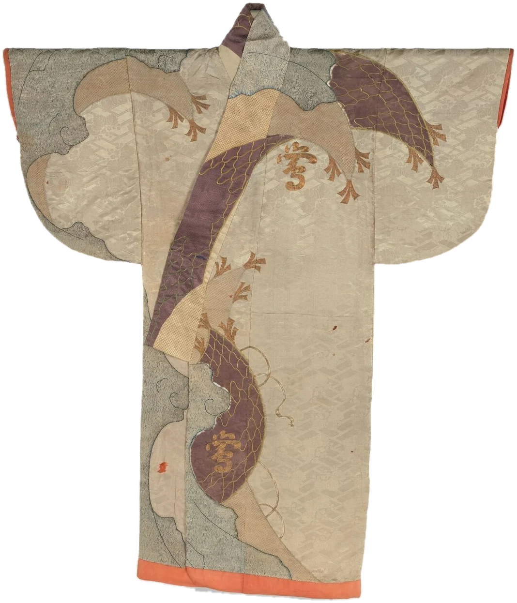

Robe (Kosode) with Fishing Net and CharactersJapan · Edo period · probably ca. 1660sThe Metropolitan Museum of Art, 2011.155 · Public domain
An online exhibition · ten rooms · audio guide
Kimono着物
Is a kimono a garment, or a set of rules?
Pick one and hold your answer. It is settled in the last room, not before.
Room 1 · Structure
One bolt of cloth
Before it is a garment it is a roll, as wide as a loom and many times longer than a person.
-
1The bolt
One roll, one width
The cloth
comes in a standardised width
[4] p.10.More
Second paragraph for the More toggle [4] p.10.
-
2The cut
Straight lines only
Cutting gives
geometrical pieces with square outlines
[4] pp.10-11.
So where does the shape come from?